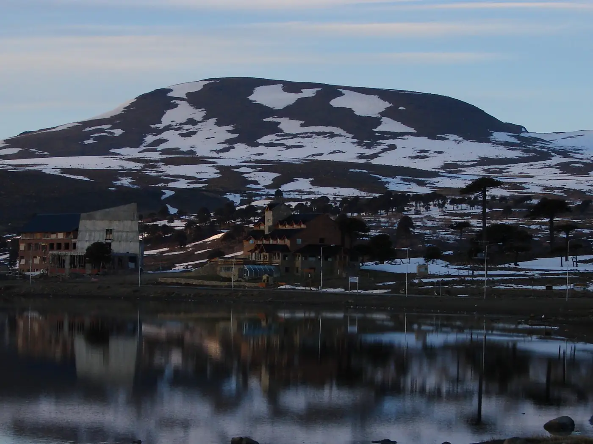

Termas y tardes en el pueblo

1 / 1
Caviahue y alrededores · Invierno
Después de un día en la montaña: las aguas termales del pueblo, una casa de té y la chimenea encendida.
Ubicación
Termas Caviahue
Ver ubicación en Google MapsTu lugar en Caviahue
Departamentos, cabañas y hostal boutique para disfrutar de la Patagonia con tu familia, amigos o pareja.